Website-Relaunch
der Feser-Graf Gruppe
Von einer erfolgreichen Website zur digitalen Vertriebs- und Serviceplattform
Warum wir uns für synaigy entschieden haben und wie wir feser-graf.de gemeinsam weiterentwickeln
Michael Mayr
Ausgangslage
Warum wir handeln müssen
Unsere Website besitzt ein starkes Fundament. Damit sie auch in Zukunft Marktführer bleibt, müssen zentrale digitale Herausforderungen gelöst werden.
Aktualität
Fahrzeugdaten werden heute zeitversetzt aktualisiert. Dadurch sehen Kunden teilweise bereits verkaufte Fahrzeuge.
Nutzerführung
Die Website bietet viele Inhalte, führt Besucher jedoch nicht immer schnell zum gewünschten Ziel.
Abhängigkeiten
Zentrale Funktionen wie die Fahrzeugsuche liegen heute teilweise außerhalb unserer eigenen Plattform.
Skalierbarkeit
Neue Marken, Angebote und Funktionen erfordern heute noch hohen manuellen Aufwand.
Markenwirkung
Die Größe, Kompetenz und Marktposition der Feser-Graf Gruppe werden digital noch nicht vollständig sichtbar.
Agenturauswahl
Warum synaigy die richtige Wahl ist
Die Agentur überzeugte nicht durch ein neues Design, sondern durch ein tiefes Verständnis unseres Geschäftsmodells und unserer digitalen Vertriebsstrategie.
Automotive-Verständnis
- Erfahrung mit komplexen Automotive-Projekten
- Verständnis digitaler Vertriebsprozesse
- Erfahrung mit Fahrzeugplattformen
Strategie & Beratung
- Analyse vor Umsetzung
- Langfristige Plattformstrategie
- Fokus auf Geschäftsnutzen
User Experience & Conversion
- Kundenzentrierte Nutzerführung
- Optimierung der Leadstrecken
- Mobile First
Technologie & Betrieb
- Aufbau auf bestehendem Kirby-System
- Skalierbare Architektur
- Langfristige Weiterentwicklung
Klassischer Agenturansatz
- Fokus auf Design
- Neues System
- Einmaliger Relaunch
- Technik im Vordergrund
- Projektende nach Go-live
Unser gemeinsamer Ansatz
- Bestehende Stärken erhalten
- Geschäftsmodell verstehen
- Plattform kontinuierlich weiterentwickeln
- Datenbasierte Entscheidungen
- Langfristige Partnerschaft
Unser Partner
Warum wir uns für synaigy entschieden haben
synaigy verbindet strategische Beratung, User Experience und Technologie zu einer langfristigen Partnerschaft.
Unternehmensprofil
Warum synaigy zu Feser-Graf passt
Ausgewählte Referenzen
- mobile.de
- Porsche
- VW
- Audi
- SEAT
- CUPRA
- Škoda
- Allianz
- LVM Versicherung
synaigy Team
Wer bei synaigy für Feser-Graf steht
Vier feste Ansprechpartner begleiten Feser-Graf von der Strategie bis in den laufenden Betrieb.
 JR
JRJoubin Rahimi
CEO synaigy- Über 20 Jahre Erfahrung im E-Commerce
- Ansprechpartner auf Ebene der Geschäftsführung
 KC
KCKlaus Cloppenburg
Plattform-Experte- Hat mobile.de mit aufgebaut
- Große Plattformen für eBay Kleinanzeigen, Liebherr, Stihl
- Aktuell Heraeus
 WS
WSWolfgang Seyppel
Chief Delivery Officer- Verantwortet Umsetzung und Teamaufstellung
- Sichert die besten Köpfe für Feser-Graf
 CS
CSChristoph Stolarski
Client Strategy Partner- Zentraler Ansprechpartner für Feser-Graf
- Kennt Agentur- und Auftraggeberseite
- Fokus: Geschäftsnutzen jeder Investition
Zielbild
Unser gemeinsames Zielbild
Wir entwickeln keine neue Website. Wir schaffen die zentrale digitale Plattform der Feser-Graf Gruppe.
Heute
Zukunft
Mehrwert
- Mehr Leads
- Mehr Service
- Mehr Effizienz
- Mehr Datenhoheit
- Langfristig skalierbar
Projektbausteine
Die sechs zentralen Projektbausteine
Der Website-Relaunch umfasst weit mehr als ein neues Design. Er verbessert Nutzererlebnis, Datenqualität, Prozesse und technische Zukunftssicherheit.
Nutzerführung & Conversion
- Klare Einstiege und Navigation
- Kürzere Wege zur Anfrage
- Mobile First
Marken-, Modell- & Angebotsseiten
- Einheitliche Seitenstruktur
- Bessere Verknüpfung
- Mehr Übersicht
Neue Fahrzeugsuche
- Eigene Suchinfrastruktur
- Mehr Filter und Komfort
- Bessere Integration
Echtzeit-Fahrzeugdaten
- Direkte API-Anbindung
- Schnellere Aktualisierung
- Weniger veraltete Fahrzeuge
Angebotsautomatisierung
- Automatisierte Prozesse
- Weniger manueller Aufwand
- Schnellere Veröffentlichung
Technische Stabilisierung
- Zukunftssichere Plattform
- Höhere Performance
- Monitoring & Dokumentation
Fahrzeugsuche
Die neue Fahrzeugsuche als Herzstück der Plattform
Die Fahrzeugsuche wird zum zentralen Einstiegspunkt für den digitalen Fahrzeugverkauf. Sie verbindet Kunden, Fahrzeuge, Finanzierung und Service auf einer Plattform.
AOS24
Aktuelle Fahrzeugdaten
Echtzeitdaten
Direkte API-Anbindung
Eigene Suchplattform
Schnell, flexibel, skalierbar
Fahrzeugsuche
Filter, Suche, Vergleich
Kundenentscheidung
Merkliste, Suchagent, Finanzierung
Qualifizierter Lead
Anfrage oder Probefahrt
Für unsere Kunden
- Aktuellere Fahrzeugsuche
- Mehr Komfort
- Weniger Klicks
Für den Vertrieb
- Höhere Leadqualität
- Weniger Streuverluste
- Schnellere Anfragen
Für Marketing
- Mehr Datenqualität
- Bessere Auswertungen
- Optimierbare Customer Journey
Für die Zukunft
- Skalierbare Plattform
- Grundlage für KI
- Kontinuierliche Weiterentwicklung
Designvorschlag 1/5 · Startseite
Gefunden wie von selbst
Die Startseite führt über die Absicht der Kunden, nicht über die interne Struktur von Feser-Graf.
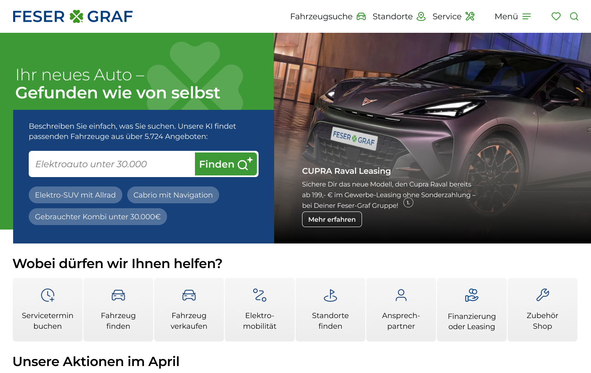
design-01-startseite-desktop.png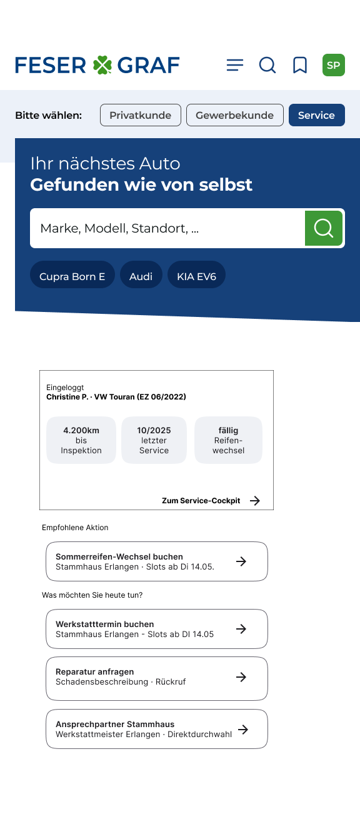
design-01-startseite-mobile.pngWas der Entwurf zeigt
- Einstiege nach Absicht: Fahrzeuge, Leasing & Finanzierung, Service & Werkstatt, Geschäftskunden
- Suche direkt im ersten Blickfeld
- Konsequent Mobile first
Designvorschlag 2/5 · Fahrzeugsuche
Suchen, wie man spricht
Strukturierte Filter und KI-Suche in einem Einstieg. Neuwagen, Angebote und Gebrauchtwagen in einer Suche.
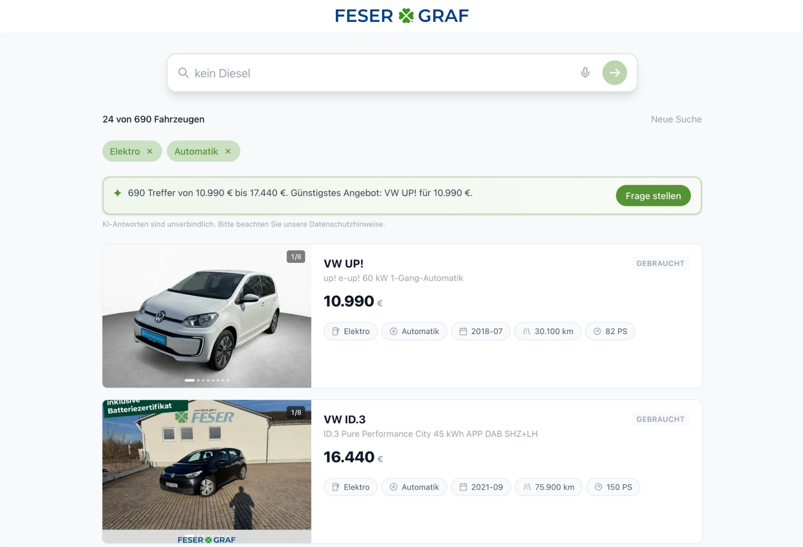
design-02-suche-desktop.png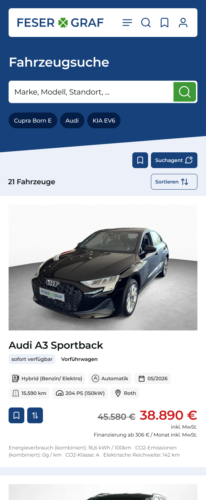
design-02-suche-mobile.pngWas der Entwurf zeigt
- Freitextsuche, z. B. „Familien-SUV, kein Diesel“
- KI-Zusammenfassung der Trefferliste
- Keine Trennung zwischen Angeboten und Gebrauchtwagen
Designvorschlag 3/5 · Fahrzeug-Detailseite
Alles für die Entscheidung auf einer Seite
Die Detailseite beantwortet die Kauf- und Finanzierungsfrage, bevor der Kunde anruft.
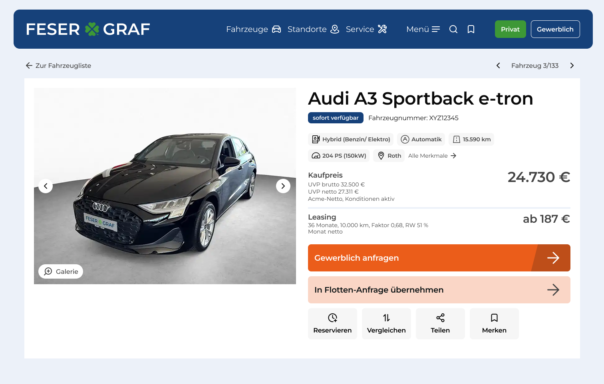
design-03-detailseite-desktop.png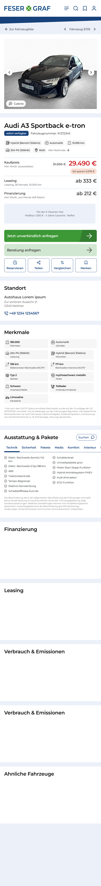
design-03-detailseite-mobile.pngWas der Entwurf zeigt
- Finanzierungs- und Leasingrechner prominent platziert
- Eigene Ansicht für Geschäftskunden
- Sticky Conversion-Element: Probefahrt, Anfrage oder Rückruf je nach Kontext
Designvorschlag 4/5 · Angebotsseiten
Ein Template für Marke, Modell und Angebot
Heute konkurrieren Marken-, Modell- und Angebotsseiten miteinander. Künftig trägt ein Template alle drei.
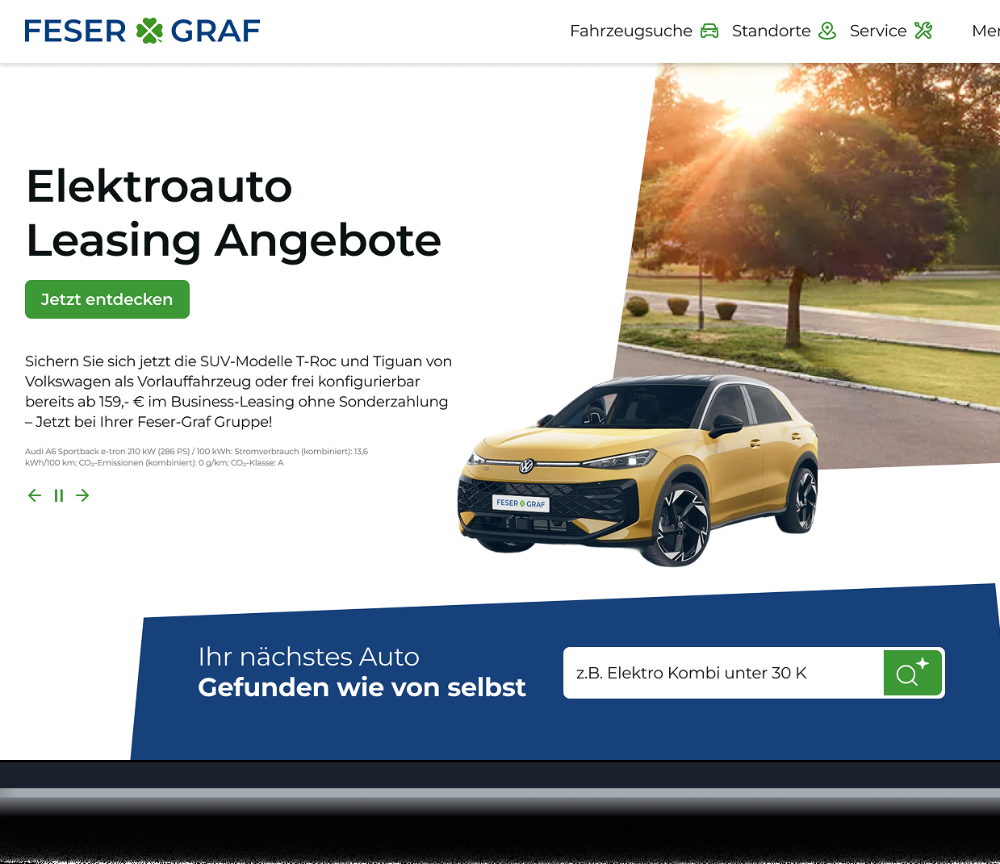
design-04-angebotsseiten-desktop.png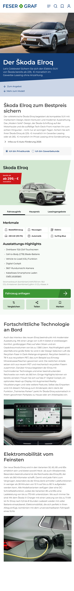
design-04-angebotsseiten-mobile.pngWas der Entwurf zeigt
- Einheitliche Struktur für alle Marken
- Stärkt die Google-Sichtbarkeit statt sie aufzuteilen
- Automatisch aus Hersteller-PDFs befüllbar
Designvorschlag 5/5 · Navigation & Header
Klare Orientierung für Privat- und Geschäftskunden
Header und Navigation machen die neue Struktur auf jedem Gerät sofort verständlich.
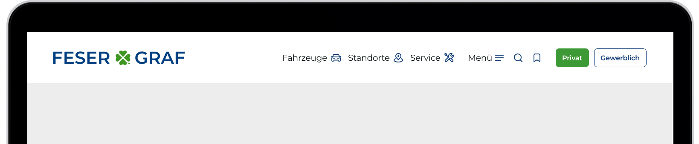
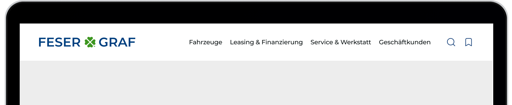
design-05-header-desktop.png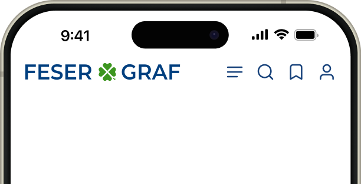
design-05-header-mobile.pngWas der Entwurf zeigt
- Header-Varianten inkl. Login-States
- Umschaltung Privat / Gewerbe
- Schneller Zugriff auf Suche und Kontakt, auch mobil
Automatisierung
Mehr Effizienz durch Automatisierung
Wiederkehrende Marketingprozesse werden automatisiert vorbereitet. Die inhaltliche Kontrolle bleibt jederzeit bei der Feser-Graf Gruppe.
Herstellerangebot
PDF oder Aktionsunterlagen
Automatische Verarbeitung
Inhalte werden erkannt
Seitenentwurf
Angebotsseite wird vorbereitet
Redaktion
Prüfen und freigeben
Veröffentlichung
Website geht online
Optimierung
Kontinuierliche Verbesserung
Zeitersparnis
- Weniger Routinearbeit
- Schnellere Umsetzung
- Mehr Effizienz
Qualität
- Einheitliche Inhalte
- Weniger Fehler
- Höhere Konsistenz
Marketing
- Schnellere Kampagnen
- Mehr Flexibilität
- Bessere Steuerung
Wichtig
- Keine automatische Veröffentlichung
- Redaktion entscheidet
- Mensch bleibt verantwortlich
Projektumsetzung
Sicherer Relaunch statt riskanter Komplettumbau
Die neue Plattform entsteht Schritt für Schritt. Der laufende Betrieb und bestehende Prozesse bleiben jederzeit abgesichert.
Analyse
Bestehende Plattform verstehen
Konzeption
Neue Lösungen entwickeln
Umsetzung
Schrittweise Integration
Tests
Prüfen und absichern
Go-live
Kontrollierte Veröffentlichung
Stabilität
- Bestehendes Kirby-System bleibt erhalten
- Bewährte Prozesse werden übernommen
- Kein unnötiger Systemwechsel
Sicherheit
- Entwicklung in Testumgebungen
- Kontrollierte Qualitätssicherung
- Schrittweise Einführung
- Sichtbarkeit schützen
- Weiterleitungen planen
- SEO kontinuierlich begleiten
Betrieb
- Laufender Betrieb bleibt erhalten
- Keine Unterbrechung der Leadgenerierung
- Risiken werden minimiert
Projektorganisation
Gemeinsam zum erfolgreichen Relaunch
Die Feser-Graf Gruppe steuert das Projekt strategisch und fachlich. synaigy ergänzt das Team mit Beratung, UX, Technologie und Entwicklung.
- Strategische Steuerung
- Budget & Entscheidungen
- Management-Abstimmung
- Projektkoordination
- Technik & Strategie
- Schnittstellen & Website
- Tracking
- UX & Conversion
- Google Ads
- SEO
- GEO
- Websiteoptimierung
- Partnersteuerung
- autoCRM
- MobilAPP
- Beratung
- UX & Entwicklung
- Technische Umsetzung
- Strategie
- Priorisierung
- Entscheidungen
- Marketing · SEO
- Tracking · Website
- UX
- Entwicklung
- Technologie
Business Impact
Warum sich diese Investition langfristig auszahlt
Der Website-Relaunch schafft keine neue Website. Er schafft die digitale Grundlage für zukünftiges Wachstum.
Für unsere Kunden
- Schnellere Fahrzeugsuche
- Einfachere Navigation
- Mehr Transparenz
- Besseres digitales Erlebnis
Für den Vertrieb
- Mehr qualifizierte Leads
- Höhere Leadqualität
- Schnellere Prozesse
- Weniger manueller Aufwand
Für die Feser-Graf Gruppe
- Mehr Sichtbarkeit
- Mehr Datenqualität
- Mehr Effizienz
- Mehr Skalierbarkeit
- Mehr Flexibilität
- Mehr Zukunftssicherheit
Abschluss
Vielen Dank.
Gemeinsam gestalten wir die digitale Zukunft der Feser-Graf Gruppe.
Michael Mayr
Investition
Projektumfang & Investition
Die Investition deckt alle wesentlichen Projektbausteine für den strategischen Website-Relaunch ab.